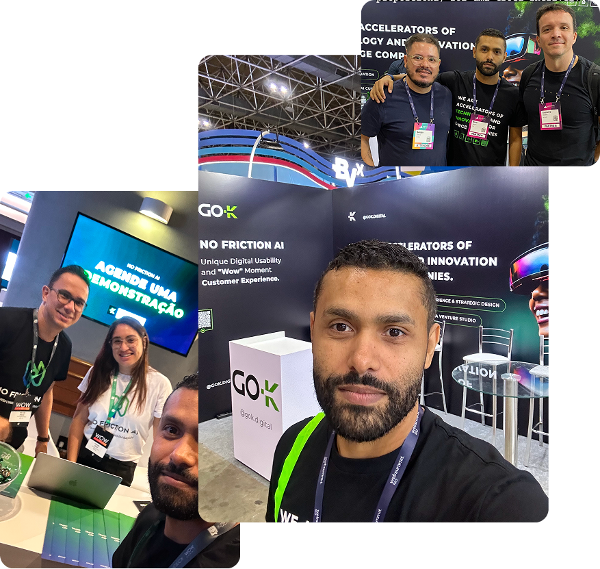

De Feedback do Cliente a Impacto no Negócio
No Friction AI é uma plataforma de Inteligência Artificial projetada para transformar grandes volumes de feedback de clientes em resultados mensuráveis de negócio, acelerando decisões e melhorando a experiência do usuário em escala.
Contexto
Empresas coletavam grandes volumes de dados de clientes (NPS, CSAT e reviews), mas não conseguiam transformar essas informações em valor estratégico para o negócio.
O processo era manual, caro e lento, dificultando a priorização de melhorias e atrasando decisões importantes de produto.
Esse cenário resultava em decisões baseadas em intuição, aumento de churn e perda de oportunidades de receita.

O principal desafio foi transformar feedback de clientes em decisões rápidas e acionáveis.
A análise mostrou que o processo era altamente manual e ineficiente. Como resultado:
- Alto custo operacional com análise manual
- Baixa velocidade na resposta a problemas dos usuários
- Falta de priorização entre times de produto
O desafio era reduzir o tempo entre insight e ação e criar uma plataforma orientada à tomada de decisão.
O projeto seguiu um fluxo estratégico focado em transformar dados em decisões, alinhando produto, IA e negócio.
Descoberta
Identificação dos problemas de negócio e análise de dados de clientes.
Estratégia
Definição da visão do produto como plataforma de decision intelligence.
Proposta
Criação da solução com foco em automação e priorização de insights.
Design & IA
Desenvolvimento da experiência e integração de capacidades de IA.
Entrega
Lançamento da plataforma com insights acionáveis em tempo real.
Interface Plataforma Dashboard
Atuei estrategicamente na concepção e desenvolvimento da plataforma, desde a descoberta inicial até a definição da experiência. Inicialmente, diagnostiquei que o processo de análise de feedback dos clientes era manual e descentralizado, o que impedia melhorias ágeis e respostas em tempo real.
Para resolver isso, estruturei a visão de uma plataforma focada em decisões. Trabalhei no desenho de experiências para priorização (clusterização de problemas e análise de sentimentos), garantindo que o sistema não apenas apresentasse dados, mas recomendasse ações estratégicas claras.
Conectando a usabilidade às necessidades de negócio, o design facilitou que times de produto pudessem reduzir radicalmente o tempo entre captar uma dor do usuário e implementar a solução, impulsionando a eficiência operacional de toda a empresa.
A solução demonstrou forte impacto na eficiência operacional e na tomada de decisão, com ganhos diretos em velocidade e redução de custos.
-70%
redução no tempo de análise manual, automatizando grande parte do processo
Tempo real
geração contínua de insights permitindo respostas rápidas a problemas
+Eficiência
melhor priorização de produto com base em dados reais de clientes